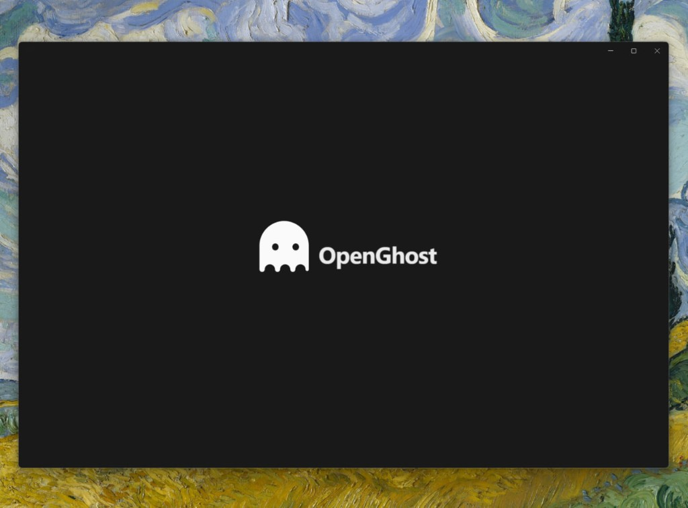
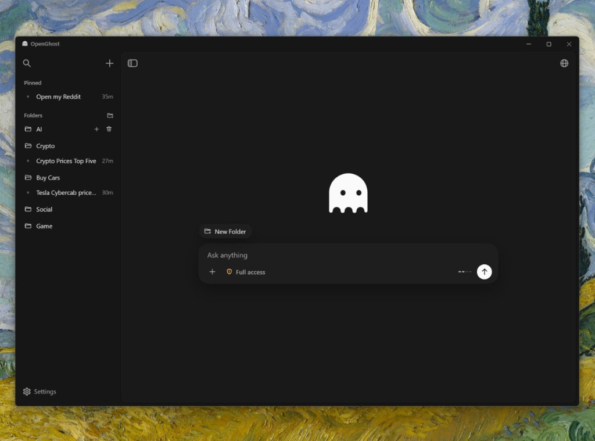
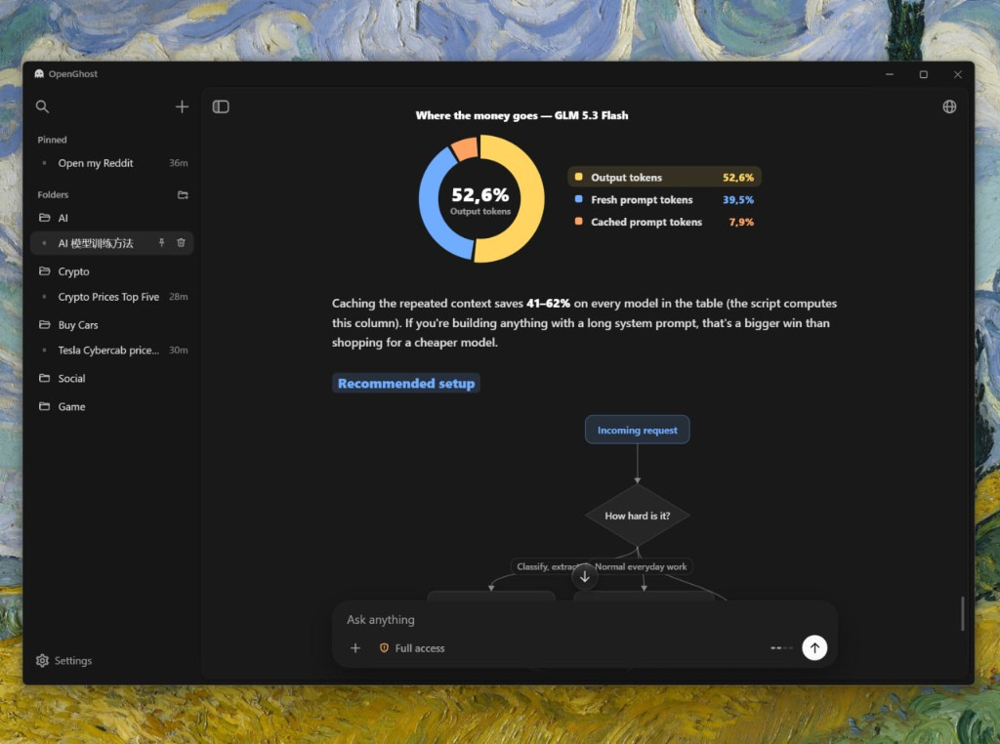
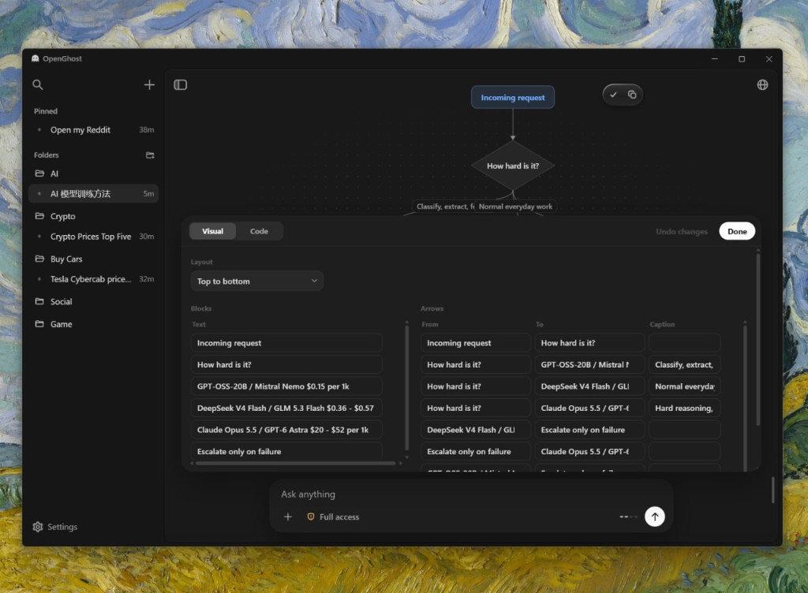
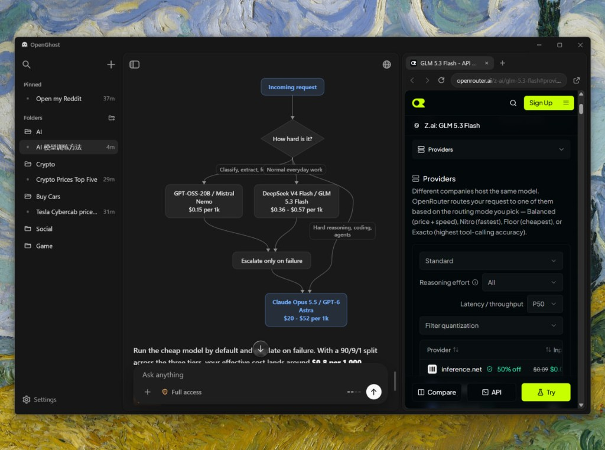
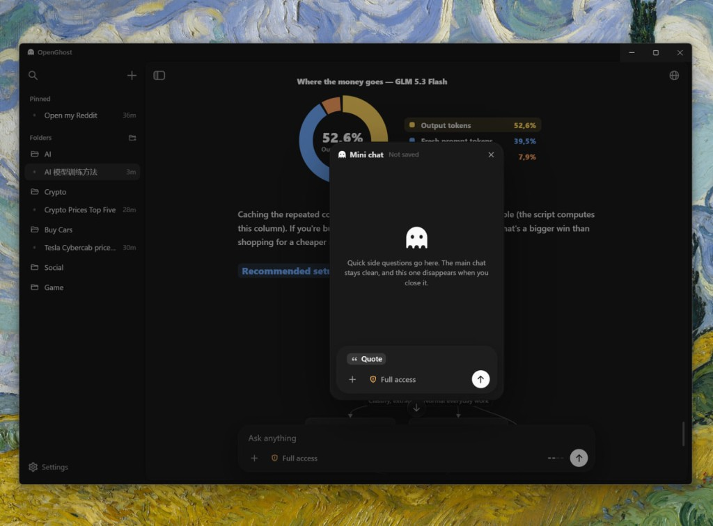
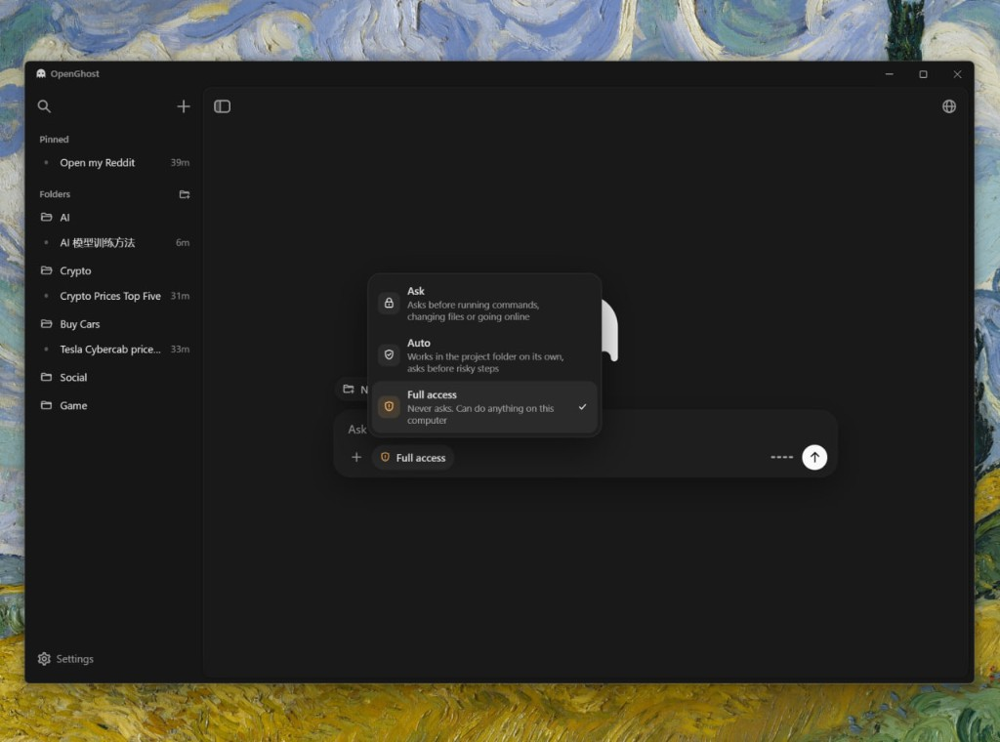
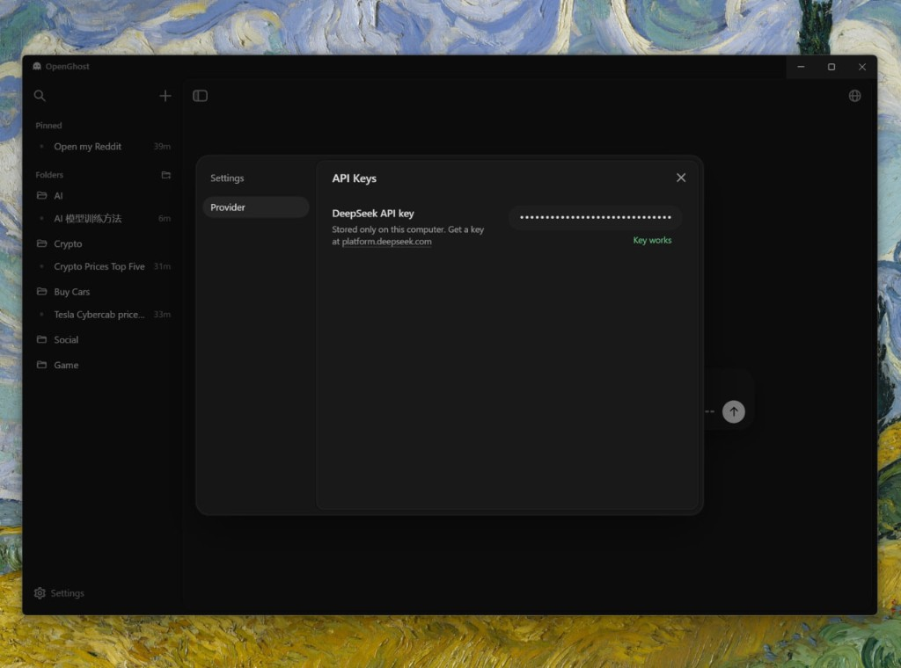

It opens with the ghost
The app starts on its own screen. The ghost arrives first, then the name OpenGhost.

A chat lives in a folder
Every new chat belongs to a folder you choose. Until the first message, the ghost waits above the composer.

Show the numbers, do not only tell them
The rendering engine is written from scratch. Shares, flows, prices, and plans become charts and diagrams next to the explanation. One picture carries the idea.

Change the diagram where it stands
A chart is not a finished picture. Open it and edit the layout, the blocks, and the arrows. The drawing updates in place.

A browser with its own cursor
OpenGhost has a built-in browser and drives it itself. It opens a page, moves its own cursor, clicks, types, and sees what is on the screen. The panel sits on the right of the chat. Close it and the agent still works.

Mini chat for a side question
Select a passage and open Mini chat over the conversation. It is the same agent, with the current chat as context. Nothing written there is saved, and closing the window throws it away.

Three ways to let it act
Ask waits for approval before commands, file changes, and the web. Auto works inside the project folder and asks before a risky step. Full access does not ask.

The key stays on this computer
OpenGhost talks to DeepSeek with a key stored only on your machine. The app checks the key and tells you when it works.
